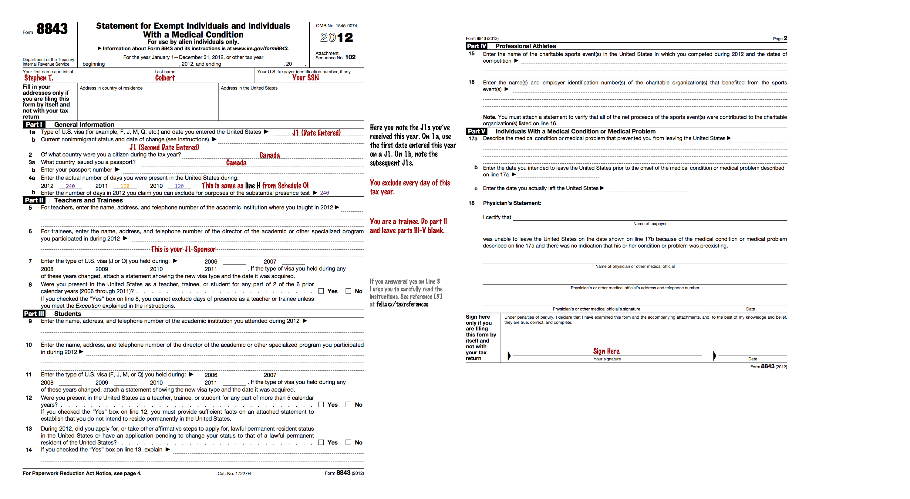

This guide is designed for most Waterloo students whose only US income comes from J1-visa internships. Lucky you! You get to fill out 3 sets of taxes this year! As a Canadian in the US, you'll first file your State and Federal taxes. Afterwards, you'll report the amount of tax you've paid in the US on your Canadian tax return so you aren't double-taxed.
In summary, you are a non-resident who qualifies for no additional tax exemptions because:
The best thing to do is to file the 1040NR-EZ. At the time of writing, there is no way for you to electronically file your Federal Taxes.
Forms:
Links (You may have to reference these while using the guide):
You will also declare your J1 status using Form 8843:
Where to mail forms (irs.gov):
| If you have to pay more taxes, include a check and send to | Internal Revenue Service P. O. Box 1303 Charlotte, NC 28201-1303 USA |
| Otherwise | Department of the Treasury Internal Revenue Service Austin, TX 73301-0215 USA |
Attach a copy of your W2 to your forms. Congratulations! You've filed your federal taxes.
You will have to file a state tax return for each state you've worked in.
If California is the only state you've worked in, you only need to file the 540NR Short Form. Otherwise, you'll require both the 540NR Long Form as well as the Schedule of California Adjustments (unaddressed by this guide). At the time of writing, there is no way for you to electronically file your California taxes.
Forms:
Links (You may have to reference these while using the guide):
Corrections:
Attach a copy of your W2 to your forms. Congratulations! You've filed your state taxes.
Where to mail forms (ftb.ca.gov)
| If you have to pay more taxes, include a check and send to | Franchise Tax Board P.O. Box 942867 Sacramento, CA 94267-0001 USA |
| Otherwise | Franchise Tax Board P.O. Box 942840 Sacramento, CA 94240-0001 USA |
If you receive a refund, you will also receive a receipt for your refund in a Form 1099-G. You enter this as a taxable refund on your next year's federal return (1040NR-EZ, Line 4).
If you are looking to receive your tax refund by cheque, you'll notice you can't fit an international address there. I e-mailed the Department of Revenue Services who advised me to, "Please enter the additional information in the space provided. We will make every effort to fit your address in our system."
Forms:
Links (You may have to reference this while using the guide):
You don't have to file state taxes [=
You cannot file electronically. You must file the IT-203.